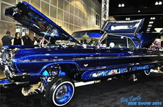
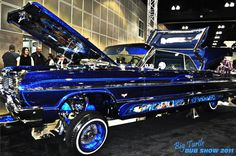

I like these lowriders because they show its true colors and it just looks nice especially when you get to custimize them to what you really are into your true colors its something you can really admire you can show off the cars they are really good looking in the night too when your just crusing around in the night have little car shows and win money.


 

they cost atleast 10,000 depending what year they are if its an older version it will cost more heres my facts aboout LOWRIDERS. Unlike hot rods and other racing cars, lowriders were designed to parade slowly. Each car is lowered within inches of the pavement and driven as a rolling work of art. Many lowriders have tufted velvet upholstery and chain steering wheels. Few original manufactured parts are visible. The roots of lowriding in L.A. trace all the way back to the 1940s, when car culture was beginning to take hold across America. This was especially true in southern California where families began purchasing cars in order to adapt to the expanded cities of the new, post-war urban landscape.